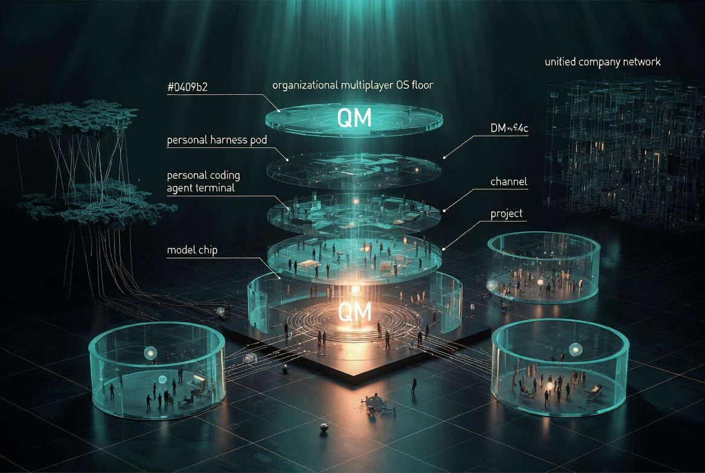
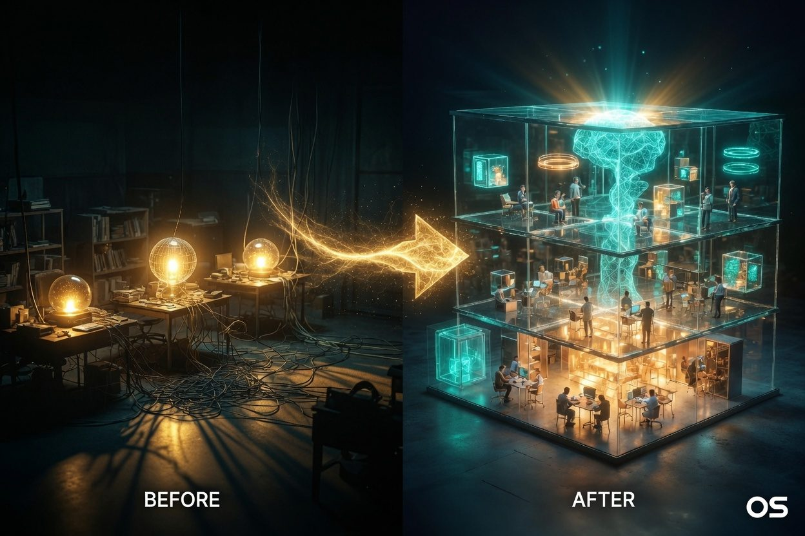

VISUAL SUMMARY · GROK IMAGINE
まず全体像——QM が動かした「座標」

クリックで拡大図A · 会社OSとしての QM中央の積層ディスク＝モデル → 個人コーディングエージェント → 個人 harness → 組織 multiplayer OS（QM）。周囲のガラス室は Scope（DM / チャンネル / プロジェクト）。左の根系は乱立した個人エージェント、右は統合ネットワークの比喩。

クリックで拡大図B · BEFORE → AFTER左：個人の島に閉じたエージェント（配線が絡む）。右：人とエージェントが同じ建物＝会社OSで働く。矢印は「秘書個人」から「秘書制度」への移行。
テキストで固定する地図（画像の正確な読み取り）
生成画像は比喩。数字・用語・比較はここに正本を置く。
Claude / GPT / Kimi … 知能そのもの
Claude Code · Codex · Cursor — 個人が IDE/CLI で書く
Hermes · OpenClaw — ツール・ループ・記憶の個人 OS
人・部屋・権限・cron・共有 — 会社のエージェント OS
投資家側の YC が自社本番基盤を MIT で出した
賢いエージェント → 組織の協調面
durable job queue + worker pool
共有スレではなく共有作業空間
RFS 領域の参照実装が無料で出た
一行要約：Claude Code / Hermes が「優秀な個人秘書」なら、QM は「秘書制度（配属・権限・共有キャビネ・ジョブキュー）そのもの」を配った。
上の2枚が本スライドの視覚的フック。続く節は、層・シフト・5つの驚きをテキストで論証する。
WHAT SHIPPED
YC が開源したのは「賢いモデル」ではない
誤解しやすいので最初に境界を置く。QM はフロンティアモデルでも、Claude Code のクローンでもない。エージェントを会社単位で走らせるための実行・協調・権限の基盤（harness）である。
- Triggers — cron / webhook で常駐ジョブ
- Memory + shared files — 個人と共有の両方
- Company brain connectors — 社内データへの接続
- Agent browser / shareable web artifacts
- Multi-player projects — 人とエージェントが同じ部屋で働く
- Slack + Web UI ネイティブ / cloud-first / MIT
リポジトリは github.com/yc-software/qm。YC 自身が「early / bugs / experiment」と前置きしつつ、パートナーは数週間「YC 内の主たる harness」として毎日使っていると証言している。
WHY SURPRISING
エンジニア視点の「5層のサプライズ」
01 · 生態系誰が・何を出したか
- YC は通常「投資する側」であって社内 OS を MIT 配布する主体ではない
- Fall 2026 RFS の multiplayer AI 領域と一致
- 「投資したいテーマ」を自分たちが先に参照実装化した
02 · 問題定義賢さ → 協調面
- 個人エージェントはすでに飽和気味
- 組織展開で壊れるのは知能ではなく 権限・記憶汚染・監査・共有
- 主語が「複数専門エージェントの会議」から「会社に人とエージェントが同居する」へ
03 · アーキテクチャ趣味プロセス → 本番
- OpenClaw 系：単一プロセス・メモリ内スケジューラになりがち
- QM：durable job queue + worker pool
- 1日数万スレッド運用前提——「デモとジョブ基盤のギャップ」を埋めた
04–05 · 運用と市場multiplayer と参照実装
- 共有チャットではなく 実行環境ごと共有される作業空間
- Slack 上で公開実行 → レビュー・信頼・教育が同時に起きる
- 同領域 SaaS の差別化が「UXと運用」へ押し上げられる
VS PERSONAL AGENTS
Claude Code / Hermes / OpenClaw との決定的な差
| 観点 | Claude Code / Codex / Cursor | Hermes / OpenClaw | QM |
|---|---|---|---|
| 主ユーザー | 個人開発者 | 個人パワーユーザー | 組織（経理〜法務〜Eng） |
| 主戦場 | リポジトリ / IDE | ローカル or 個人クラウド | Slack + Web + 社内データ |
| マルチユーザー | 弱い〜後付け | 基本1人 | 設計の中心 |
| 権限モデル | ユーザー ≒ 環境 | 個人設定中心 | 人 / 部屋 / PJ の Scope |
| 永続運用 | セッション寄り | 個人マシン依存になりがち | cron · webhook · 長期エージェント |
| 位置づけ | 自分がそのエンジン | 個人用の殻 | 複数エンジンを差し替える会社の殻 |
一言で言えば——Hermes / OpenClaw は 優秀な個人秘書を配る。QM は 秘書制度そのもの（配属・権限・共有キャビネ）を配る。
VS FRAMEWORKS & SAAS
SDK でも縦 SaaS でもない——「動く社内プロダクト」
フレームワーク系LangGraph / CrewAI / AutoGen / Mastra
- グラフ・ロール・ツール呼び出しのライブラリ
- あなたがアプリ全体を書く
- 主にエージェント同士の協調
- 組織機能は自前
QMデプロイして使える社内 OS
- Slack / Web UI 込みの動くプロダクト
- あなたはデプロイとポリシーが中心
- 人間同士 + エージェントの協調が主
- 記憶 / 権限 / sandbox / cron が最初からある
閉源エージェント SaaSRelevance AI 等
- 縦（営業・CS）に強いことが多い
- ベンダーロック・データ境界が論点
- カスタム深度は UI の範囲内
QM のポジション横串の会社 OS · MIT
- 横（会社全体）を狙う
- 自前クラウドに載せやすい
- 証明が YC 自身の全社利用
ARCHITECTURE PRIMITIVES
Scope と durable 実行——本番で欲しかった二つの原始素
コミュニティ要約で繰り返されるメタファーは 「1エンジン + 無数の隔離された部屋」。同じエージェントでも、入る部屋で帽子（記憶・権限・設定）が変わる。
私的メモリ・個人キー・個人の試行錯誤
チーム共有の文脈・公開実行・レビュー可能な軌跡
成果物・長期タスク・権限境界をまたぐ協働
もう一つの原始素が実行基盤。QM の背骨は durable job queue と worker pool。
CAVEATS
サプライズしすぎないための注釈
YC 自身が early / bugs / experiment と言っている。完成した銀の弾丸が出たわけではない。
- エンタープライズ級の SOC2・細粒度監査・IdP 連携が即プロダクション級かは未知数
- Slack 中心文化に依存
- 導入の本質的工数は QM 本体より 社内データの connector と権限設計
- MIT で出た瞬間、同領域 SaaS は差別化を強いられるが、運用・サポート・縦特化ではまだ勝負できる
正確な理解：サプライズは「完成品の配布」ではなく、カテゴリの参照実装と問題設定が、業界の重心を動かしたことにある。
THE BOTTOM LINE
一行で言うと、何が起きたのか
QM のサプライズは、エージェントの知性競争を一度横に置き、「会社というマルチプレイヤー空間で、誰のエージェントが・どの部屋で・何を覚え・何をしてよいか」を OS として定義し、それを YC が自社運用の実績付きで MIT 配布したことだ。
個人の道具Claude Code / Hermes
スーパーパワーを個人に渡す
組織の制度QM
そのパワーを職制・権限・実行基盤に組み込む
次の問い実装側
自社の Scope と connector を誰が設計するか
だから 7/31 のエンジニア TL は「またエージェントか」ではなく、「エージェント時代の Active Directory + ジョブキュー + Slack が来た」と読んだ——それが深い読みである。
THE BOTTOM LINE
これは「新しいチャットボットが出た」ニュースではない。エージェントを会社の正規インフラとして設計する参照実装が、投資家自身の手から MIT で配られたニュースである。
2026-07-31 — AI Intelligence Hub / Day Slide · YC QM 深掘り · スタンドアロンHTML